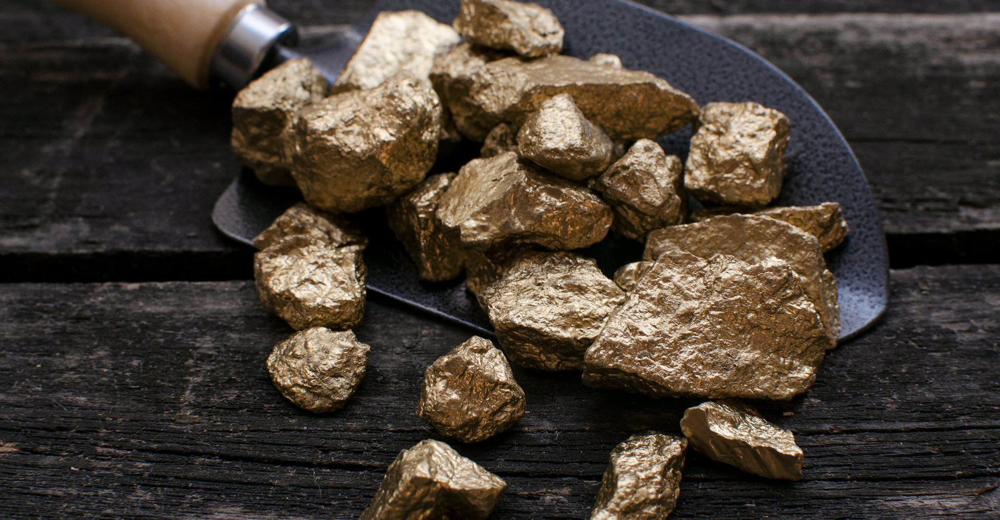
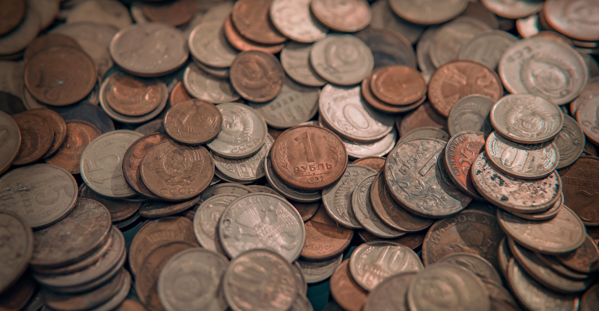

Minério é qualquer material extraído da crosta terrestre que contém um ou mais minerais úteis, que podem ser extraídos e processados para gerar produtos de valor econômico. Esses produtos podem ser metais como ferro, cobre, ouro, prata e alumínio, ou minerais não metálicos, como carvão, sal e calcário. Os minérios são fundamentais para a indústria moderna, sendo usados na produção de metais para construção, eletrônicos, veículos e uma infinidade de outros produtos.

A extração de minérios ocorre por meio de diferentes métodos, dependendo do tipo de minério e da localização geológica. Os métodos mais comuns são a mineração a céu aberto e a subterrânea. Após a extração, os minérios passam por processos de beneficiamento, como britagem, moagem e separação de impurezas, para garantir que o material extraído seja puro o suficiente para ser utilizado. O processamento de minérios pode gerar subprodutos, o que levanta preocupações ambientais, como a poluição do ar e da água, além de resíduos tóxicos.
Minério de ferro: Usado para produzir aço, um material essencial para construção e fabricação de veículos.
Minério de cobre: Crucial para a fabricação de fiação elétrica, eletrônicos e componentes de carros.
Minério de ouro: Utilizado em joalheria, como reserva de valor e na indústria eletrônica devido à sua alta condutividade.
Minério de alumínio (bauxita): Processado para a produção de alumínio, usado em aviões, automóveis e embalagens.
Minério de níquel: Usado na produção de aço inoxidável e baterias recarregáveis.
A mineração de minérios tem um grande impacto ambiental. A extração de minérios pode causar desmatamento, perda de biodiversidade e contaminação dos solos e corpos d'água. O uso intensivo de recursos hídricos no processamento e o descarte inadequado de resíduos tóxicos também são problemas significativos. A poluição do ar, gerada pela queima de combustíveis e a liberação de partículas de poeira, é outro efeito adverso da mineração. Além disso, a mineração subterrânea pode provocar desmoronamentos e outros riscos para as áreas ao redor.

Com o aumento da demanda por minérios devido ao crescimento da população global e ao avanço de tecnologias, como carros elétricos e energia renovável, há uma pressão crescente sobre os recursos minerais. A exploração sustentável e o aprimoramento das técnicas de reciclagem são fundamentais para garantir que os minérios possam continuar a ser usados sem esgotar os recursos naturais. O desenvolvimento de tecnologias mais limpas e eficientes na mineração, bem como a melhoria na gestão de resíduos, também são essenciais para minimizar os impactos ambientais.
Os minérios desempenham um papel fundamental na economia global, sendo base para indústrias chave. Países ricos em recursos minerais, como o Brasil, Austrália e Rússia, exportam grandes quantidades de minérios, o que contribui para o crescimento econômico e a geração de empregos. No entanto, os mercados de minérios também estão sujeitos a flutuações de preços, influenciadas pela oferta e demanda, inovações tecnológicas e políticas ambientais. Isso pode afetar tanto os países produtores quanto as economias que dependem da importação desses recursos.